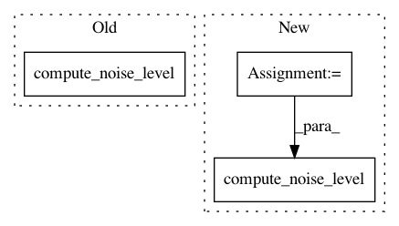

c65712426aa8fe18a6b40b71a9a6b2c9681e9ec2,TTS/bin/tune_wavegrad.py,,,#,15
Before Change
best_schedule = None
total_search_iter = len(base_values)**args.num_iter
for base in tqdm(cartesian_product(base_values, repeat=args.num_iter), total=total_search_iter):
model.compute_noise_level(num_steps=args.num_iter, min_val=1e-6, max_val=1e-1, base_vals=base)
for data in loader:
mel, audio = data
y_hat = model.inference(mel.cuda() if args.use_cuda else mel)
After Change
// setup optimization parameters
base_values = sorted(np.random.uniform(high=10, size=args.search_depth))
exponents = 10 ** np.linspace(-6, -2, num=args.num_iter)
best_error = float("inf")
best_schedule = None
total_search_iter = len(base_values)**args.num_iter
for base in tqdm(cartesian_product(base_values, repeat=args.num_iter), total=total_search_iter):
beta = exponents * base
model.compute_noise_level(beta)
for data in loader:
mel, audio = data
y_hat = model.inference(mel.cuda() if args.use_cuda else mel)
In pattern: SUPERPATTERN
Frequency: 3
Non-data size: 3
Instances
Project Name: mozilla/TTS
Commit Name: c65712426aa8fe18a6b40b71a9a6b2c9681e9ec2
Time: 2020-11-14
Author: erogol@hotmail.com
File Name: TTS/bin/tune_wavegrad.py
Class Name:
Method Name:
Project Name: mozilla/TTS
Commit Name: 5a59467f34ea1b33a10ea8cc205c6b2bbb1bc158
Time: 2020-11-14
Author: erogol@hotmail.com
File Name: TTS/bin/train_vocoder_wavegrad.py
Class Name:
Method Name: train
Project Name: mozilla/TTS
Commit Name: 5a59467f34ea1b33a10ea8cc205c6b2bbb1bc158
Time: 2020-11-14
Author: erogol@hotmail.com
File Name: TTS/bin/train_vocoder_wavegrad.py
Class Name:
Method Name: evaluate